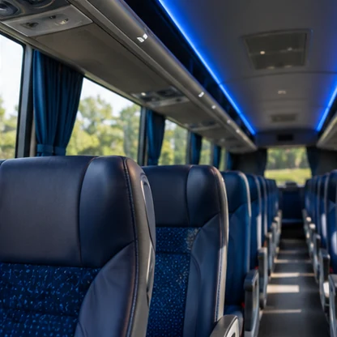

Encontre guias, procedimentos e acessos por assunto ou setor.
8 conteúdos
Veja quais parceiros oferecem descontos para a equipe e confira as condições antes de usar um benefício.
Orientações sobre a bonificação dos motoristas.
Abra a ficha mecânica, o cadastro de crachá e os canais que você usa durante o trabalho.
O que fazer quando há um acidente, desde o atendimento aos passageiros até o registro no DLV.
Consulte a rota, o grupo de passageiros e as regras de embarque do contrato Intelbras.
Prepare o celular para receber suas rotas e veja por onde começar na primeira viagem.
Consulte as orientações da empresa para a garagem, o atendimento aos passageiros e cada etapa da viagem.

Conecte seu celular à rede das áreas de descanso e dos refeitórios da unidade.
Tente outro assunto ou limpe os filtros.